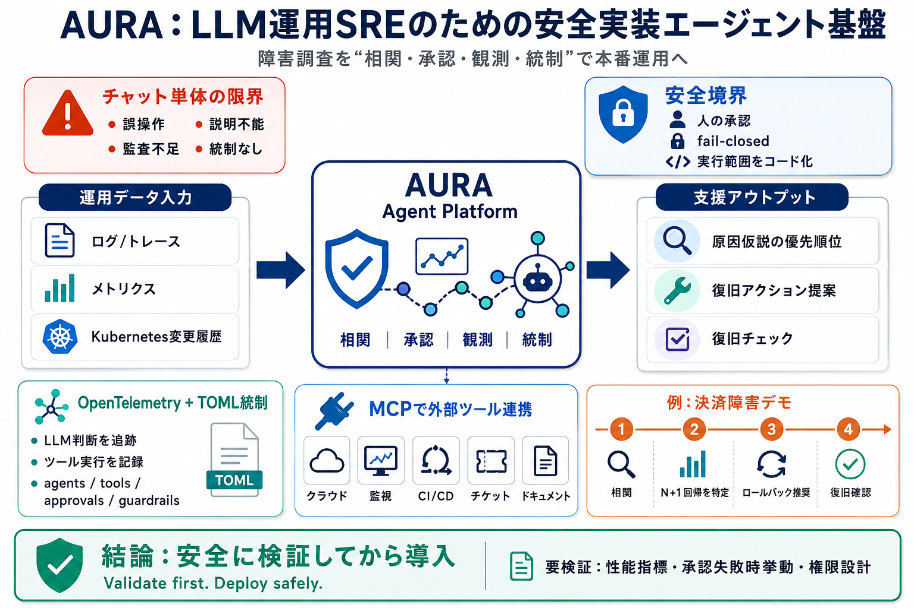

mezmo/aura: AURA is a production-tested SRE agent ...
## Repository files navigation # AURA AURA is a production-tested SRE agent platform you can deploy in minutes. AURA …

## Repository files navigation # AURA AURA is a production-tested SRE agent platform you can deploy in minutes. AURA …
Is AURA production-ready? AURA is an Apache 2.0 harness built in Rust with guardrails, state management, authentication,…
✨ AURA is the open-source agentic harness for production AI. See how teams are using AURA in production here.✨ # AURA…
Platform Agentic SREActive Telemetry PipelinesIngestionDestinations Pricing PricingTalk to an engineerMezmo free tria…
| | | | | --- | | | Show HN: Aura – a Rust agent that investigates and fixes production incidents (github.com/mez…